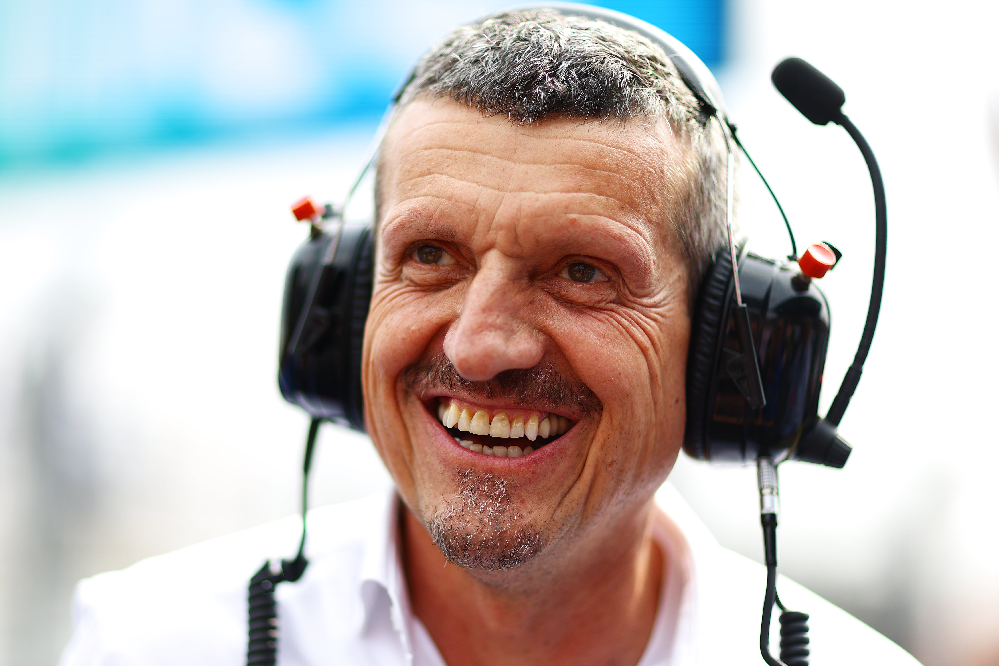

Haas

The American Team
Haas is a relatively new team created by Gene Haas and they debuted in the 2016 season. They haven't been a fortunate team and often finish near or at the bottom of the standings with little to no points. This year they aren't doing to bad with drivers Esteban Ocon and Ollie Bearman they are currently 6th in the standings. They also have the first female race engineer in Formula 1.
